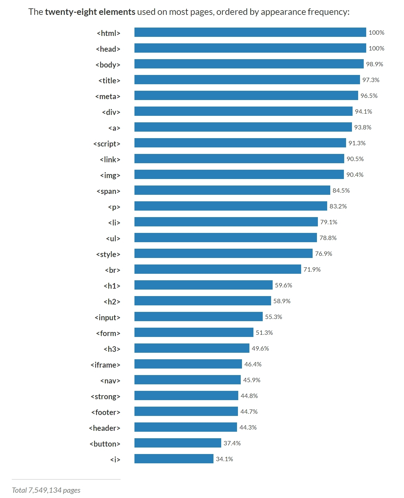

스터디 사이트: 생활코팅 "https://opentutorials.org/course/1"
<strong> </strong>
- Strong, Tag 사이의 글자를 진하게 표시
<u> </u>
- Underline 밑줄 표시
<h1>~<h6> </h1>~</h6>
- Heading 제목 / 검색의 기준이 됨.
<br>
- Line Breaker 줄바꿈
<p> </p>
- Paragraph 단락, 예) <p style="margin-top:45px;"> 단락 위에 45px만큼 띄움
<img>
- Image 이미지 삽입, 예시: <img src="coding.jpg" width="100%"> src는 Source의 약자로 이미지파일 경로, width는 사진의 크기를 조정, %는 화면에 따라 자동 조절
<li> </li>
- list 목록, <ul> </ul> 목록 구분, Unordered List: 숫자없음, <ol> </ol> 목록 구분 Ordered List: 숫자있음.
<title> </title>
- 제목, 검색할 때 가장 중요
<meta charset="utf-8">
- 웹페이지가 UTF-8로 만들어졌으니 웹브라우저에서 UTF-8로 열도록 설정
<head> </head>
- 본문을 설명, body - /body Tag: 본문 으로 구분하여 사용
<!doctype html>
- HTML로 만들어졌다는것을 표현, 문서의 시작 부분에 추가
<html </html> Tag
- head Tag와 body Tag를 감싸는 tag
<a> </a>
- Anchor, 링크삽입, 예시: <a href="링크할 파일이나 사이트 주소" target="_blank" title="Tooltip"> / _blank: 새로운 Tab으로 열림, title: 마우스 커서를 올리면 설명 표시
https://www.advancedwebranking.com/html/

Apache 설치방법 검색어 : "how to install apache http server on windows", "bitnami wamp stack"
Bitnami를 이용하여 웹서버 apache 설치
HTTP - Hyper Text(웹페이지) Transfer(전송) Protocol(약속)
Web Browser + Web Server - http://127.0.0.1/index.html = http://localhost/index.html
Web Browser - http://192.168.10.169/index.html(Web server의 IP주소)